Click and write. Pinch to get closer.
On habits 6 Nov
Morning, before class 2 Nov
Letters 29 Oct
“Essais” was blocked to protect your Mac.
Why the extra step? Essais isn't notarized by Apple, which needs a paid developer account. The code is open, so anyone can check what it does.
Free. macOS 26 or later.